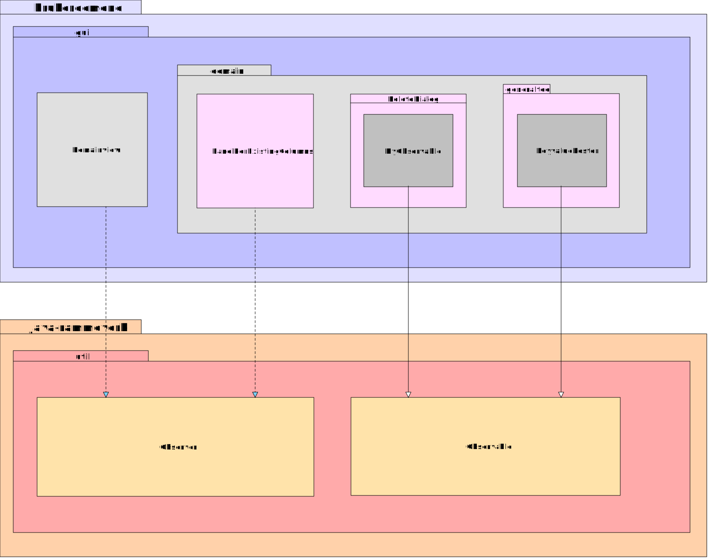
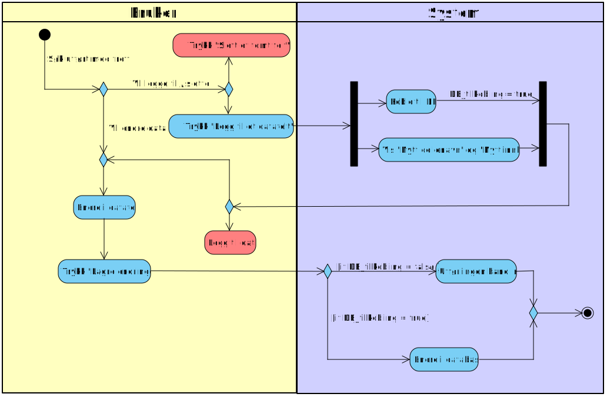
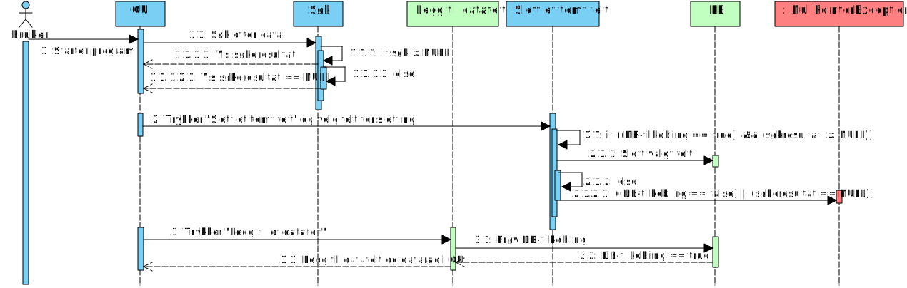
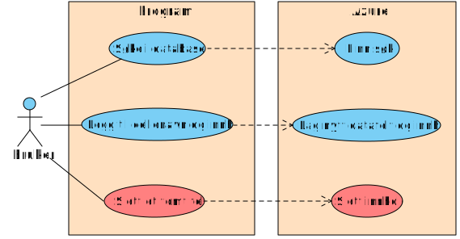

Innledning
Gruppeeksamen i objektorientert analyse og design ved Høgskolen i Buskerud og Vestfold vinteren 2015 gikk ut på å analysere et Java-program ved hjelp av diagrammodelleringsverktøy
Applikasjonen er en forholdsvis enkel applikasjon for å vise værdata. Applikasjonen lar brukeren søke opp datafelt i en dokumentdatabase, endre innhold i disse, samt legge til og fjerne felt fra databasen. I tillegg bruker applikasjonen en rekke UI-elementer for å holde brukeren orientert om tilstanden applikasjonen befinner seg i. Vi har trukket ut aspekter av applikasjonen som vi har vurdert som interessante å belyse i form av UML.
Navigering i dette dokumentet gjøres ved å scrolle på siden, eller ved å benytte snarveiene i menyen. Ved å klikke på diagrammene, vil disse åpne seg i original størrelse i nye faner. Dokumentet er testet og funnet i orden i Chrome, Edge, Opera, Safari og Firefox. Det er lesbart, men med noen formateringsuregelmessigheter i Internet Explorer 11.
Lav kohesjon
Utvikleren har ikke fulgt MVC-konvensjonene fullt ut, og har lagd en hybridløsning - noe som medfører lavere kohesjon i systemet enn det kunne hatt
Analyse av strukturen i programkoden avslører at utvikleren har hatt tanker om å skille datagrunnlag, grensesnitt og programlogikk, noe som er et godt utgangspunkt. Imidlertid er ikke tankerekken fullført, og det viser seg at datagrunnlaget - heretter kalt model - ligger i en pakke som også inneholder klasser for programlogikk. Model instansierer et azureclient-objekt som igjen tar seg av databaseaksess, og så danner datagrunnlaget for systemet.
Følgende klassediagram illustrerer problemet:

De nødvendige håndgrepene for å heve kohesjonsnivået er forholdsvis enkle: model bør skilles ut i en separat pakke fremfor å inkluderes i en pakke hvor det også befinner seg programlogikk. Disse logikklassene burde forøvrig også vært flyttet til controller-pakken. En strammere tilnærming til MVC-paradigmet ville således medført høyere kohesjonsnivå i programkoden (Holmstedt, 2004, s. 269).
Den overordnede pakkestrukturen fremkommer også av dette diagrammet, dog er pakkene som tilhører Java-rammeverket utelatt.
Bruk av interfaces
Applikasjonen benytter en håndfull interfaces fra Java-rammeverket
Enkelte klasser i applikasjonen kontraktsfester implementasjon av gitte metoder på sedvanlig vis - da primært hendelseslyttere som detekterer brukerinteraksjon på grensesnittkontroller. Men applikasjonen implementerer også et Observer-interface fra rammeverket - spesifikt klassene DomainView og PanelForExistingColumns. Dette interfacet implementeres i en klasse dersom klassen ønsker å bli underrettet om endringer i observerbare objekter. Metoden update som implementeres gjennom interfacet tar et objekt av typen Observable og lar utvikleren implementere kode for hendelser når et objekt av denne typen endres. I dette tilfellet er det snakk om domeneklassene MyObservable og KeyValueRoster, som da spesialiserer rammeverkklassen Observable.
Rent konkret i denne applikasjonen brukes dette til å farge grensesnittkontroller, som tekstfelt, med en varselfarge under visse omstendigheter. Disse omstendighetene fremgår i senere diagrammer.
Diskusjon rundt søkefunksjonalitet
Søkefunksjonen fungerer, men har innslag av dårlig usability
Før brukeren gjør et søk, er knappene for å slette- og legge til datafelt aktive, og reagerer visuelt på brukerinteraksjon. Dette kan skape forvirring da brukeren kan få inntrykk av at de faktisk utfører handlinger. Dette bryter med the principle of least astonishment, som vektlegger at grensesnittkontroller og programflyt bør oppføre seg slik brukere flest forventer (Seebach, 2001). Dette burde vært løst ved å markere knappene som inaktive inntil kriteriene for aktivering er oppfylt - fortrinnsvis når brukeren faktisk har utpekt kandidatfelt for addering eller sletting.

Problematikk ved endring av eksisterende data og struktur
Funksjonaliteten for å endre data og struktur i dokumentdatabasen følger ikke prinsipper for usability, og fremstår som forvirrende for brukeren
Praktisk bruk av applikasjonen viser problemer i programflyten når det gjelder hvordan den håndterer bruker-input i tilfeller hvor brukeren ønsker å utføre endringer. Når bruker trykker "Lagre endringer", skjer det tilsynelatende ingen ting. Debug-vinduet i IDE-et avslører imidlertid en programfeil, men brukeren av applikasjonen får ingen tilbakemelding om dette, og applikasjonen gjør heller ingen endringer i databasen. Igjen bryter applikasjonen med the principle of least astonishment.
Sekvensdiagrammet under illustrerer problemet (det tas utgangspunkt i at bruker først har søkt opp kandidatdata for endring):

Her ser vi i punkt 2.1 også et eksempel på bruk av interfacet Observer til å endre bakgrunnsfarge på felt, som nevnt i tidligere avsnitt.
Grunnen til at det ikke er mulig for brukeren å endre data uten at visse uintuitive kriterier er oppfylt, er teknisk; koblingen mot databasen inntreffer ikke der det er hensiktsmessig i denne sammenheng.
Aktivitetsdiagrammet nedenfor illustrerer hvordan det forutsettes at brukeren trykker "Legg til et datafelt" før det blir mulig å gjøre noen endringer i databasen. Databasetilkobling som tillater endring utføres ikke før denne knappen trykkes, og brukeren får ingen tilbakemelding om dette, eller noen indikasjon på at endringer som er forsøkt gjort før denne knappen er trykket på ikke har blitt lagret. Aktivitetene merket med rødt kan dekomponeres ytterligere, men er i dette diagrammet kortet ned for lesbarhetens del.
Problematikk ved datasletting
Funksjonalitet for å slette data i dokumentdatabasen følger heller ikke prinsipper for usability, og fremstår som forvirrende for brukeren
Bruk av applikasjonen viser igjen problemer i programflyten når det gjelder hvordan det håndterer bruker-input. Når brukeren trykker "Slett et tomt felt", får brukeren vist et nytt grensesnittvindu hvor alle tomme felt blir fremvist. Disse er representert med cellenavn fra databasen. Når brukeren så velger et datafelt og trykker "Slett det valgte feltet", skjer det ingenting. For brukeren fremstår det som om applikasjonen fryser.
Sekvensdiagrammet under illustrerer dette:
Igjen inntreffer ikke koblingen mot databasen der det er hensiktsmessig. Denne koblingen skjer først der livslinjene i sekvensdiagrammet over er markert med grønt.
Databasen og fantomkolonner
Brukers interaksjon mot databasen skaper potensielt tomme kolonner
Brukeren har mulighet til å slette tomme felt, men ikke hele kolonner i databasen. Dette gjør at det blir "fantomkolonner" etter innholdet i feltene blir slettet. Sletting av kolonner fordrer således, med nåværende implementasjon i applikasjonen, tredjepartsverktøy - eksempelvis Azure Storage Explorer.
Øvrige observasjoner
Vi har gjort noen observasjoner i programkode og -flyt som vi vurderer som interessante å påpeke
- Applikasjonen har en del ubrukte import-setninger. Disse gjør applikasjonen større enn nødvendig, og de bidrar til å gjøre koden mer uoversiktlig. Ubrukte importsetninger bør fjernes.
- Variabelnavn er til tider lite beskrivende i koden, og bidrar til å svekke den generelle lesbarheten. Beskrivende variabelnavn bør tilstrebes (Martin, 2015, kap. 2). Et eksempel er MainWindow-objektet som sendes som parameter i init-metoden i Controller-klassen. Dette får tildelt variabelnavnet "ui". Selv om de fleste med teknisk bakgrunn antagelig vil forstå hva det er snakk om, kan lesbarheten bedres ved å være mer litt mer verbos.
- Connection string'en som inneholder tilgangsinformasjonen til databasen foreligger i klartekst i en egen fil, og aksesseres av programkoden under runtime. Dette er ikke heldig - ved eksempelvis publisering til et offentlig repository, vil konfidensiell tilgangsinformasjon eksponeres for allmennheten. Denne filen burde enten vært kryptert, eller connection string'en burde forekommet i form av en systemvariabel i tjenermiljøet som så ble aksessert av koden.
Konklusjon
Vi har belyst sentrale aspekter av applikasjonen, samt diskutert forbedringspotensialer innen struktur og brukerinteraksjon
Vår analyse av programkoden og praktisk bruk av applikasjonen har avslørt noen aspekter vi har valgt å fokusere på. Det vi har funnet kan sies å ha moderat alvorlighetsgrad. Høy kohesjon er et viktig prinsipp å ivareta fra begynnelsen av for å unngå at applikasjonen utvikles med basis i dårlige kodekonvensjoner som så siden blir vanskelig å utbedre. Nå er akkurat denne applikasjonen av forholdsvis triviell art, men det finnes eksempler på dårlig tilnærminger til kodemessige "best practices" som har forvoldt menneskers død (Safety Research & Strategies, 2013). I tillegg er det noen merkverdigheter rundt brukeropplevelsesaspektet ved applikasjonen, hvor brukeren må gjette hva applikasjonen har gjort og ikke gjort.
Vi har belyst med diagrammer og tekst de punktene vi har vurdert som interessante.
Litteraturreferanser
- Holmstedt, V. (2004). Objektorientert systemutvikling og UML. Fagbokforlaget.
- Martin, R. C. (2015). Clean code: A handbook of agile software craftsmanship. Prentice Hall.
- Seebach, P. (2001). The principle of least astonishment. IBM DeveloperWorks.
- Safety Research & Strategies. (2013). Toyota unintended acceleration and the big bowl of "spaghetti" code
Andre kilder
- Bootstrap-tema hentet fra: www.bootswatch.com
- Bootswatch-lisens: https://github.com/thomaspark/bootswatch/blob/gh-pages/LICENSE